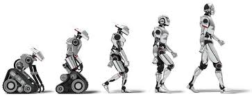

CLASIFICACIÓN DE LA ROBOTICA
Según su cronología
En este caso se distinguen hasta cinco tipos de robots, según la fase por la que haya pasado la robótica hasta el momento.
Primera Generación: robots manipuladores
Son sistemas mecánicos multifuncionales con un sencillo sistema de control, bien manual, de secuencia fija o de secuencia variable.
Segunda Generación: robots en aprendizaje
Repiten una secuencia de movimientos que ha sido ejecutada previamente por un operador humano. El modo de hacerlo es a través de un dispositivo mecánico. El operador realiza los movimientos requeridos mientras el robot le sigue y los memoriza.
Tercera generación: robots reprogramables
El controlador es un ordenador que ejecuta las órdenes de un programa y las envía al manipulador o robot para que realice los movimientos necesarios.
Cuarta Generación: robots móviles
En la cuarta generación aparecen los primeros robots inteligentes, capaces de interpretar el entorno en tiempo real.
Quinta Generación: robots con inteligencia artificial
Es la etapa que se encuentra actualmente en desarrollo. Pretende imitar al ser humano y son autónomos.

Según su estructura
La estructura está determinada por el tipo de configuración general del robot, puede ser metamórfica. El concepto de metamorfismo, aparecido recientemente, se introduce para aumentar la flexibilidad operativa del robot mediante el cambio de su configuración. El metamorfismo permite varios niveles, desde el más básico (cambiar la herramienta o el efecto final) hasta el más complejo, como modificar o cambiar algunos de sus elementos estructurales o subsistemas.
Como se mencionó, los dispositivos y mecanismos agrupados bajo el nombre general de robot son muy diversos, y por lo tanto es difícil crear una clasificación única que pueda resistir un análisis crítico y preciso. Según la arquitectura, los robots se dividen en los siguientes grupos: multiunidos, móviles, android, zoomorficos e híbridos.
- Poliarticulados:Este grupo incluye robots de muy diferentes formas y configuraciones, teniendo en común el hecho de que son esencialmente sedentarios (aunque en casos excepcionales pueden ser controlados para movimientos limitados) y están construidos para mover sus elementos finales en un determinado espacio de trabajo. o con múltiples sistemas de coordenadas y un número limitado de grados de libertad. Este grupo incluye robots manipuladores, robots industriales y robots cartesianos, que se utilizan cuando es necesario cubrir un área de trabajo relativamente grande o alargada, trabajar sobre objetos en el plano vertical de simetría o reducir el espacio del piso.
- Moviles:Son robots de gran movilidad basados en coches o plataformas y equipados con un sistema locomotor rodante. Continúan su viaje con la ayuda de un mando a distancia o guiados por la información recibida de los sensores circundantes. Estos robots aseguran el transporte de piezas de un punto a otro de la cadena de producción. Guiados por radiación electromagnética de circuitos incrustados en el suelo o tiras detectadas fotoeléctricamente, pueden incluso evitar obstáculos y tienen una inteligencia relativamente alta.
- Androides:un tipo de robot que intenta reproducir total o parcialmente la forma humana y el comportamiento cinemático. Actualmente, los androides son todavía dispositivos muy poco avanzados y sin ningún uso práctico y están destinados básicamente a la investigación y la experimentación. Uno de los aspectos más complejos de estos robots, donde se centra la mayor parte del trabajo, es el movimiento bípedo. En este caso, el principal problema es el control dinámico y coordinado del proceso en tiempo real manteniendo el equilibrio del robot. Se les suele llamar “muñecos” cuando ves los cables que te permiten ver cómo realizan su proceso.
- Robots Zoomorficos:Los robots zoomórficos, entre los que pueden incluirse androides, se caracterizan principalmente por sus sistemas de movimiento que imitan a diversos seres vivos. A pesar de las diferencias morfológicas en sus posibles sistemas de locomoción, los robots zoomórficos se pueden agrupar en dos categorías principales: caminantes y no caminantes. El grupo de robots zoomórficos que no caminan no está muy desarrollado. Las pruebas realizadas en Japón se basaron en segmentos cilíndricos inclinados conectados axialmente entre sí y dotados de un movimiento de rotación relativo. Los robots zoomórficos de múltiples patas son numerosos y se están probando en diversos laboratorios para desarrollar vehículos terrestres reales, tripulados o autónomos, capaces de avanzar sobre superficies muy rugosas. Las aplicaciones de estos robots son interesantes en el campo de la exploración espacial y la exploración de volcanes.
- Híbridos:Estos robots corresponden a robots de difícil clasificación cuya estructura se coloca junto a robots ya descritos, ya sea juntos o en paralelo. Por ejemplo, un dispositivo con ruedas articuladas y segmentadas es al mismo tiempo una de las características de los robots móviles y de los robots zoomórficos.